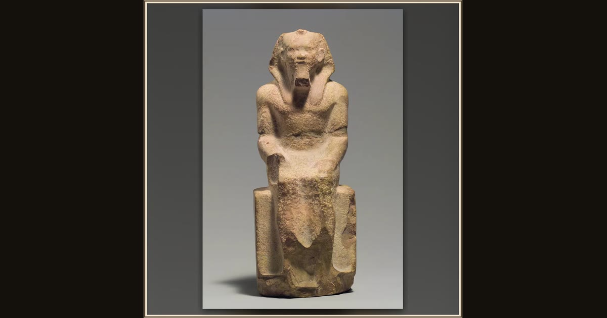

Seated Statue of King Menkaure
Old Kingdom · ca. 2490–2472 BCE · met
A limestone statue of King Menkaure seated on his throne, wearing the royal headcloth; Menkaure is the king Herodotus calls Mycerinus, son of Kheops and the most just of judges (2.129.1) Explore its place in Herodotus's Histories, Book II, chapter 430.